Marvel Series
Explore Marvel Cinematic Universe Multiverse Saga from Phases Four through Six, including stories about heroes, villains, and alternate realities.
Explore Marvel Cinematic Universe Multiverse Saga from Phases Four through Six, including stories about heroes, villains, and alternate realities.
Phase Four series introduce new heroes and continue the stories of familiar MCU characters. All titles listed below have been released.
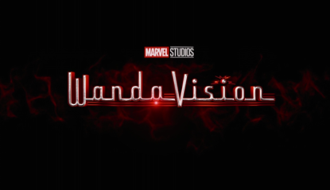
Released in 2021, WandaVision follows Wanda Maximoff and Vision in a mysterious suburban town that shifts through decades of television styles.
Released in 2021, Sam Wilson and Bucky Barnes team up to confront a new threat while Sam considers what it means to carry the Captain America mantle.
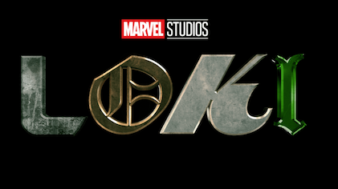
Released in 2021, Loki follows the alternate-timeline Loki after the Time Variance Authority arrests him for disrupting the timeline.
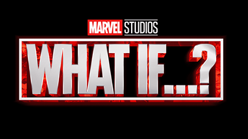
Released in 2021, this animated anthology explores alternate outcomes to key events in the MCU multiverse.
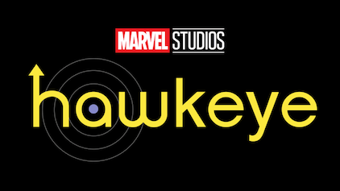
Released in 2021, Clint Barton teams up with archer Kate Bishop in New York City as they face the consequences of his past.
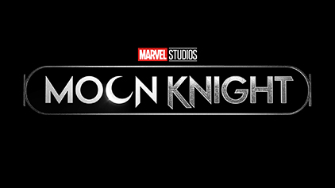
Released in 2022, Moon Knight follows Steven Grant and mercenary Marc Spector as they share a body and become entangled with an Egyptian moon god.
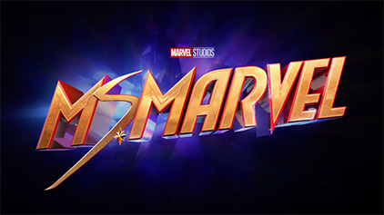
Released in 2022, teenager Kamala Khan discovers superpowers and begins her journey as a hero in Jersey City.
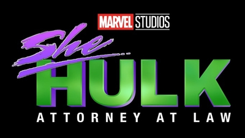
Released in 2022, lawyer Jennifer Walters balances her legal career and personal life after gaining the ability to transform into She-Hulk.
Phase Five expands the MCU with stories about secret invasions, new heroes, and the multiverse. All titles listed below have been released.
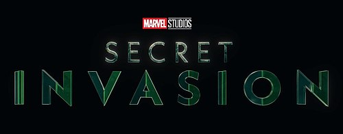
Released in 2023, Nick Fury and Talos work to stop a faction of shape-shifting Skrulls from secretly taking control of Earth.
Released in 2023, season two follows Loki as he struggles with time-slipping and tries to save the people and timelines connected to the TVA.
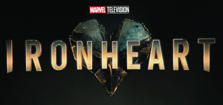
Released in 2025, inventor Riri Williams returns to Chicago and develops advanced armor while confronting a new kind of power.
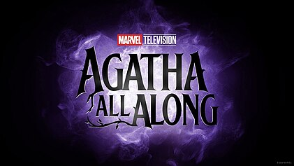
Released in 2024 as Agatha All Along, the series follows Agatha Harkness as she sets out on the Witches' Road with a new coven.
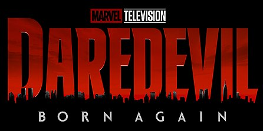
Released in 2025, season one follows Matt Murdock as he returns to his law practice and faces Wilson Fisk's growing influence in New York.
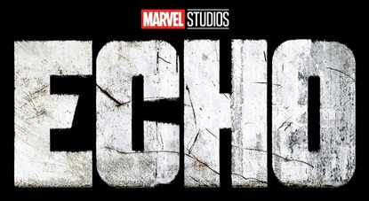
Released in 2024, Maya Lopez returns to her hometown and confronts her past and her connections to the criminal organization led by Kingpin.
Seasons two (2023) and three (2024) have both been released. The animated anthology continues exploring alternate MCU realities through the Watcher's perspective.
Season one, released in 2025, is an animated reimagining of Peter Parker's early days as Spider-Man. A second season is forthcoming.
Phase Six series continue the MCU with animated adventures and new chapters for established characters. Release status is noted for each title.
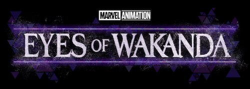
Released in 2025, this animated anthology follows Wakandan warriors on missions to recover dangerous artifacts across history.
Released in 2025, this animated series follows survivors facing a zombie outbreak in an alternate MCU timeline.
Released in 2026, actor Simon Williams pursues a role in a superhero film while becoming connected to the hero known as Wonder Man.
Season two, released in 2026, continues Matt Murdock's fight for New York. A third season is in development.
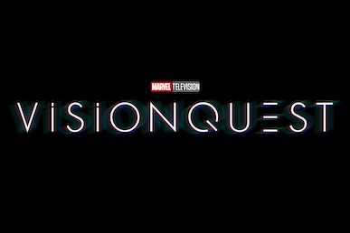
Upcoming in late 2026, VisionQuest follows White Vision as he searches for his identity and memories after the events of WandaVision.
Season two, released in 2025, is an animated reimagining of Peter Parker's early days as Spider-Man. A second season is forthcoming.